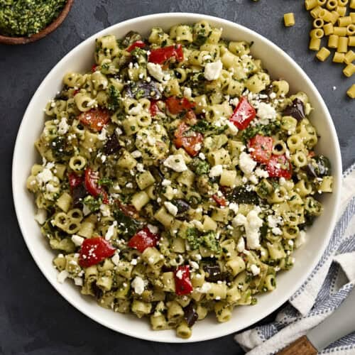

Home
Home
Ditalini Pasta Salad

This easy Ditalini Pasta Salad is packed with roasted summer veggies, tossed in pesto, and finished with a sprinkle of feta. Delicious & mealprep friendly!
INGREDIENTS
- 1 cup zucchini
- 1 cup red bell pepper
- 2 cups eggplant
- 2 Tbsp olive oil
- 1 tsp salt
- 1 tsp garlic powder
- ½ tsp black pepper
- 8 oz ditalini pasta
- ¾ cup pesto
- ¼ cup feta cheese
Instructions
- Gather all ingredients and preheat oven to 450°F
- In a large bowl, toss the zucchini, red bell pepper, and eggplant with 1 Tbsp olive oil, salt, garlic powder, and black pepper. Spread evenly on a parchment-lined baking sheet and roast for 20 minutes, turning the pan halfway through.
- Meanwhile, bring a medium pot of salted water to a boil. Cook theditalini pasta according to the package directions. Frain and set aside to cool slightly.
- In a large mixing bowl, combine the cooked pasta, remaining 1 Tbsp olive oil, roasted vegetables, pesto, and feta. Toss until everything is evenly coated.
- Chill for at least 1 hour before serving for best flavour. Garnish with additional feta cheese when serving if desired. Enjoy!
Credit